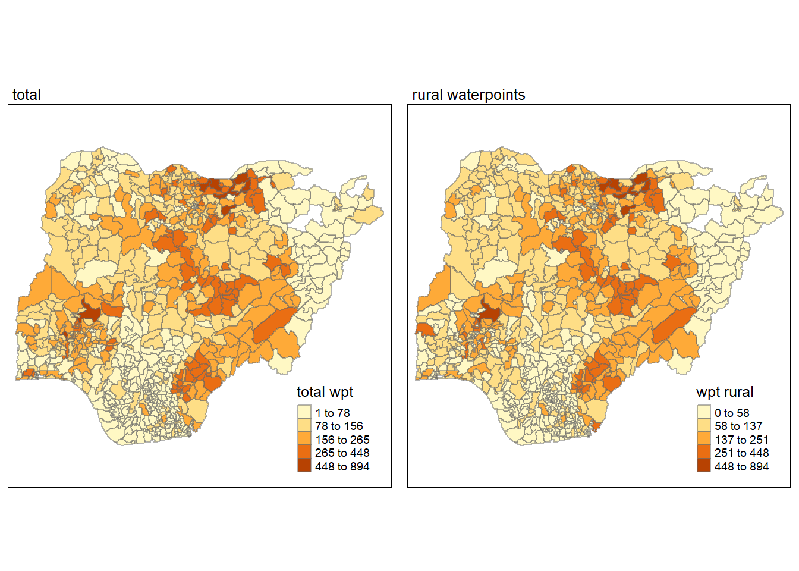

pacman::p_load(rgdal, spdep, tmap, sf, ClustGeo,stringr,
ggpubr, cluster, factoextra, NbClust,
heatmaply, corrplot, psych, tidyverse,funModeling)Take-Home Exercise 2: Regionalisation with Spatially Constrained Cluster Analysis
Overview
Getting Started
As usual, to get started, we will load the necessary R packages. For the purpose of this in-class exercise, three R packages will be used, they are:
sf for importing and processing geospatial data,
tidyverse for importing and processing non-spatial data. In this exercise, readr package will be used for importing wkt data and dplyr package will be used to wrangling the data.
#command above make sure quarto does not execute
wp <- st_read(dsn = "geodata",
layer = "geo_export",
crs = 4326) %>%
filter(clean_coun == "Nigeria")wp_sf <- st_sf(wp, crs=4326) nga <- st_read(dsn = "geodata",
layer = "geoboundaries-NGA-ADM2")Data Wrangling
Handling Duplicates
Below codes are referenced from our exemplary classmate Jordan (link), recommended by prof Kam.
nigeria <- (nga[order(nga$shapeName), ])
duplicate_area <- nigeria$shapeName[ nigeria$shapeName %in% nigeria$shapeName[duplicated(nigeria$shapeName)] ]
duplicate_areatmap_mode("view")
tm_shape(nigeria[nigeria$shapeName %in% duplicate_area,]) +
tm_polygons()nigeria$shapeName[c(94,95,304,305,355,356,519,546,547,693,694)] <- c("Bassa (Kogi)","Bassa (Plateau)",
"Ifelodun (Kwara)","Ifelodun (Osun)",
"Irepodun (Kwara)","Irepodun (Osun)",
"Nassarawa","Obi (Benue)","Obi(Nasarawa)",
"Surulere (Lagos)","Surulere (Oyo)")
length((nigeria$shapeName[ nigeria$shapeName %in% nigeria$shapeName[duplicated(nigeria$shapeName)] ]))Here we replaced NA values with “Unknown” to help facilitate processing
wp_sf <- st_join(wp_sf, nigeria) %>%
mutate(status_cle=replace_na(status_cle,"Unknown"))Exploratory Data Analysis
freq(data=wp_sf,
input = 'status_cle')wpt_functional <- wp_sf %>%
filter(status_cle %in%
c("Functional",
"Functional but not in use",
"Functional but needs repair"))wpt_nonfunctional <- wp_sf %>%
filter(status_cle %in%
c("Abandoned/Decommissioned",
"Abandoned",
"Non-Functional",
"Non functional due to dry season",
"Non-Functional due to dry season"))freq(data=wpt_nonfunctional,
input = 'status_cle')freq(data=wp_sf,
input = 'water_te_2')As there are some Hand Pumps that are labelled slightly differently, we have to use str_detect from stringr library to do a wildcard detection where we filter for anything that contains “Hand Pump”
wpt_handpump <- wp_sf %>%
filter(str_detect(water_te_2, "Hand Pump"))freq(data=wpt_handpump,
input = 'water_te_2')freq(data=wp_sf,
input = 'usage_cap')wpt_usage_abv_1000 <- wp_sf %>%
filter(`usage_cap` >= 1000)wpt_usage_less_1000 <- wp_sf %>%
filter(`usage_cap` < 1000)freq(data=wpt_usage_less_1000,
input = 'usage_cap')freq(data=wp_sf,
input = 'is_urban')wpt_rural <- wp_sf %>%
filter(`is_urban` == "False")freq(data=wpt_rural,
input = 'is_urban')nga_wp <- nigeria %>%
mutate(`total wpt` = lengths(
st_intersects( nigeria,wp_sf))) %>%
mutate(`wpt functional` = lengths(
st_intersects(nigeria, wpt_functional))) %>%
mutate(`wpt non-functional` = lengths(
st_intersects(nigeria, wpt_nonfunctional))) %>%
mutate(`wpt_handpump` = lengths(
st_intersects(nigeria, wpt_handpump))) %>%
mutate(`wpt usage_cap 1000` = lengths(
st_intersects(nigeria, wpt_usage_abv_1000))) %>%
mutate(`wpt usage_cap below 1000` = lengths(
st_intersects(nigeria, wpt_usage_less_1000))) %>%
mutate(`wpt rural` = lengths(
st_intersects(nigeria, wpt_rural)))write_rds(nga_wp, "geodata/nga_wp.rds")nga_wp <- read_rds("geodata/nga_wp.rds")
nga_wp <- nga_wp %>%
filter(`total wpt` > 0) %>%
mutate(`wpt non-functional` = replace_na(`wpt non-functional`, 0)) %>%
mutate(`wpt functional` = replace_na(`wpt functional`, 0))nga_wp <- st_transform(nga_wp,
crs = 26391)
total <- tm_shape(nga_wp) +
tm_fill("total wpt",
n = 5,
style = "jenks") +
tm_borders(alpha = 0.5) +
tm_layout(main.title = "total",legend.height = 0.25, main.title.size = 0.8,
legend.width = 0.35)
wp_functional <- tm_shape(nga_wp) +
tm_fill("wpt functional",
n = 5,
style = "jenks") +
tm_borders(alpha = 0.5) +
tm_layout(main.title = "functional",legend.height = 0.25, main.title.size = 0.8,
legend.width = 0.35)
wp_nonfunctional <- tm_shape(nga_wp) +
tm_fill("wpt non-functional",
n = 5,
style = "jenks") +
tm_borders(alpha = 0.5) +
tm_layout(main.title = "non-functional",legend.height = 0.25, main.title.size = 0.8,
legend.width = 0.35)
handpump <- tm_shape(nga_wp) +
tm_fill("wpt_handpump",
style = "jenks") +
tm_borders(alpha = 0.5) +
tm_layout(main.title = "handpump",legend.height = 0.25, main.title.size = 0.8,
legend.width = 0.35)
usageabv <- tm_shape(nga_wp) +
tm_fill("wpt usage_cap 1000",
n = 5,
style = "jenks") +
tm_borders(alpha = 0.5) +
tm_layout(main.title = "total",legend.height = 0.25, main.title.size = 0.8,
legend.width = 0.35)
usagebelow <- tm_shape(nga_wp) +
tm_fill("wpt usage_cap below 1000",
n = 5,
style = "jenks") +
tm_borders(alpha = 0.5) +
tm_layout(main.title = "total",legend.height = 0.25, main.title.size = 0.8,
legend.width = 0.35)
rural <- tm_shape(nga_wp) +
tm_fill("wpt rural",
n = 5,
style = "jenks") +
tm_borders(alpha = 0.5) +
tm_layout(main.title = "total",legend.height = 0.25, main.title.size = 0.8,
legend.width = 0.35)
tmap_arrange(total, wp_functional, asp=1, ncol=2)
tmap_arrange(wp_nonfunctional, handpump, asp=1, ncol=2)
tmap_arrange(usageabv,usagebelow, asp=1, ncol=2)
tmap_arrange(total,rural,asp=1, ncol=2)
nga_wp <- nga_wp %>%
mutate(pct_functional = case_when(
`wpt functional` == 0 ~ 0,
TRUE ~ `wpt functional`/`total wpt`
)) %>%
mutate(pct_nonfunctional = case_when(
`wpt non-functional` == 0 ~ 0,
TRUE ~ `wpt non-functional`/`total wpt`
)) %>%
mutate(pct_handpump = case_when(
`wpt_handpump` == 0 ~ 0,
TRUE ~ `wpt_handpump`/`total wpt`
)) %>%
mutate(pct_rural = case_when(
`wpt non-functional` == 0 ~ 0,
TRUE ~ `wpt rural`/`total wpt`
)) %>%
mutate(pct_usage1000 = case_when(
`wpt non-functional` == 0 ~ 0,
TRUE ~ `wpt usage_cap 1000`/`total wpt`
)) %>%
mutate(pct_usage_below_1000 = case_when(
`wpt non-functional` == 0 ~ 0,
TRUE ~ `wpt usage_cap below 1000`/`total wpt`
)) pct_functional <- tm_shape(nga_wp) +
tm_fill("pct_functional",
n = 5,
style = "jenks") +
tm_borders(alpha = 0.5) +
tm_layout(main.title = "functional",legend.height = 0.25, main.title.size = 0.8,
legend.width = 0.35)
pct_nonfunctional <- tm_shape(nga_wp) +
tm_fill("pct_nonfunctional",
n = 5,
style = "jenks") +
tm_borders(alpha = 0.5) +
tm_layout(main.title = "non-functional",legend.height = 0.25, main.title.size = 0.8,
legend.width = 0.35)
pct_handpump <- tm_shape(nga_wp) +
tm_fill("pct_handpump",
style = "jenks") +
tm_borders(alpha = 0.5) +
tm_layout(main.title = "handpump",legend.height = 0.25, main.title.size = 0.8,
legend.width = 0.35)
pct_usageabv <- tm_shape(nga_wp) +
tm_fill("pct_usage1000",
n = 5,
style = "jenks") +
tm_borders(alpha = 0.5) +
tm_layout(main.title = "total",legend.height = 0.25, main.title.size = 0.8,
legend.width = 0.35)
pct_usagebelow <- tm_shape(nga_wp) +
tm_fill("pct_usage_below_1000",
n = 5,
style = "jenks") +
tm_borders(alpha = 0.5) +
tm_layout(main.title = "total",legend.height = 0.25, main.title.size = 0.8,
legend.width = 0.35)
pct_rural <- tm_shape(nga_wp) +
tm_fill("pct_rural",
n = 5,
style = "jenks") +
tm_borders(alpha = 0.5) +
tm_layout(main.title = "total",legend.height = 0.25, main.title.size = 0.8,
legend.width = 0.35)
tmap_arrange(pct_functional, pct_nonfunctional, pct_handpump,pct_usageabv,pct_usagebelow, pct_rural, asp=1, ncol=2)